October 03, 2026
UAE Calls FlyDubai Cockpit Attack an "Attempted Terrorist Attack"
The UAE prosecutor general said Saturday the flydubai co-pilot who attacked his captain with a crash axe attempted a terrorist attack — the first official terror designation in the FZ1073 investigation.
READ THE STORY →October 03, 2026
Triple Shooting in Wilmington Kills 18-Year-Old, Wounds Two Others
Jabez Moore, 18, was killed in a triple shooting Thursday afternoon in Wilmington's Baynard Village neighborhood. Two other victims are stable. No arrests yet as gun violence in the city climbs.
READ THE STORY →October 03, 2026
Bus driver shot dead over a missed stop; Culver City suspends all weekend service
A Culver CityBus driver was shot and killed Thursday evening in Mar Vista after a passenger argued with him over a missed stop. The suspect — who fled on a bicycle from the bus's front rack — was arrested Friday. The city has suspended its entire bus system for the weekend so transit workers can grieve.
READ THE STORY →October 03, 2026
PIT maneuver ends I-20 chase; two wanted suspects in custody
A Tuesday-night pursuit across metro Atlanta ended when APD officers used a PIT maneuver to stop a car carrying Rickora Walker, 23 — wanted in Metro Nashville on an attempted second-degree murder charge after failing to appear in court — and driver Joshua Brownlee, 20, wanted on felony theft charges.
READ THE STORY →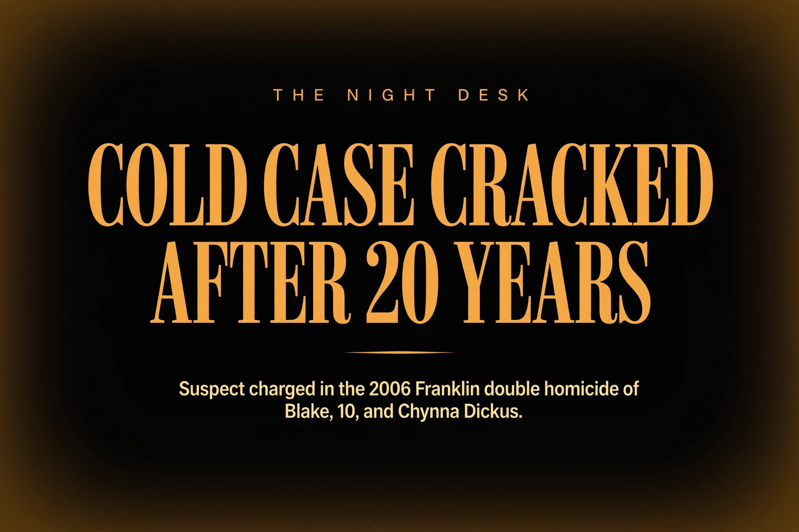
October 03, 2026
Arrest Made in 2006 Franklin Double Homicide of Blake and Chynna Dickus
More than 20 years after a 10-year-old boy and his stepmother were stabbed to death in their Franklin, Indiana home, the Johnson County Prosecutor's Office announced two murder charges against Michael Jerome James, 35 — who was 14 at the time of the killings.
READ THE STORY →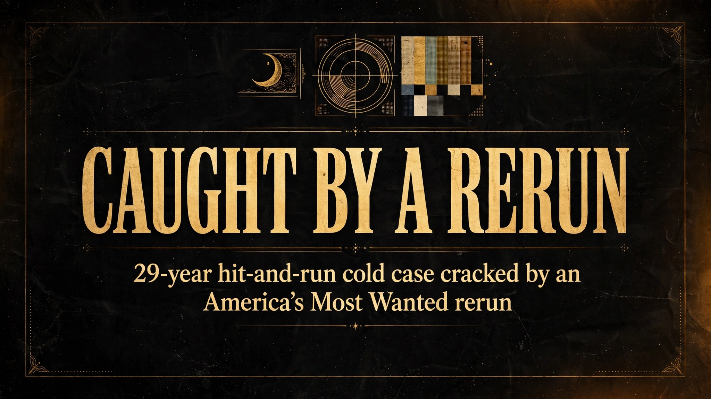
October 03, 2026
Caught by a rerun — 29-year Des Moines hit-and-run cold case cracked by an America's Most Wanted episode from 1998
Gerardo Garcia-Michel fled Iowa in 1997 after police say he struck and killed 64-year-old Leslie Ruby. A Crime Stoppers tip — triggered by a rerun of the case's 1998 America's Most Wanted episode — led U.S. Marshals to his neighbor's doorstep in New Jersey.
READ THE STORY →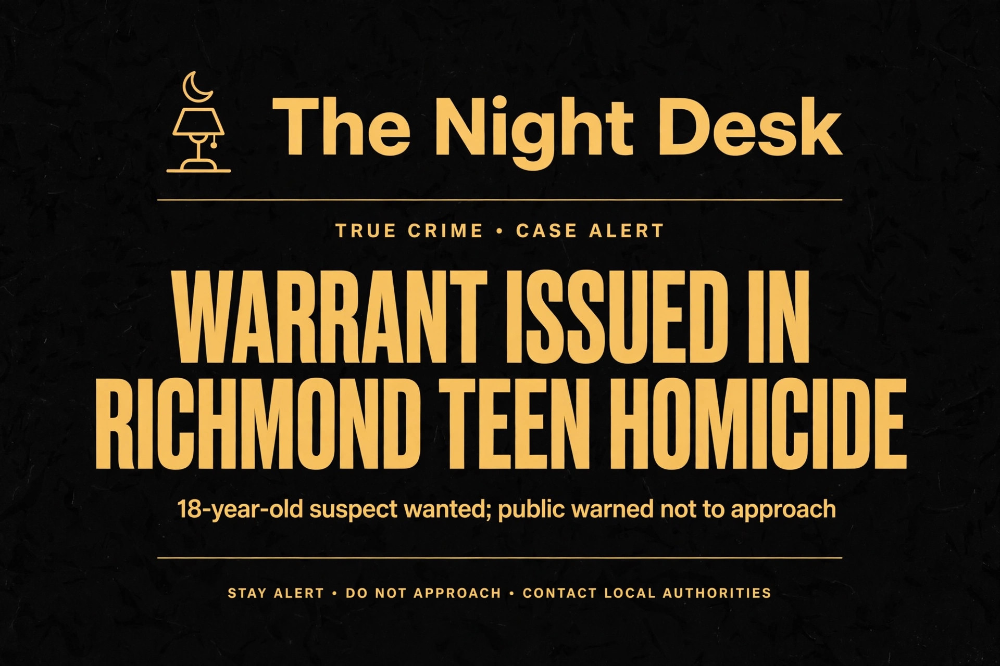
October 03, 2026
Warrant Issued for Tennessee Teen in Richmond, Indiana Homicide
Joshua Wade Smith, 18, of Knoxville, was charged Friday night with murder and three counts of attempted murder in a Sept. 28 shooting that left 18-year-old Cecelia Rayne Hargrove dead and two juveniles wounded.
READ THE STORY →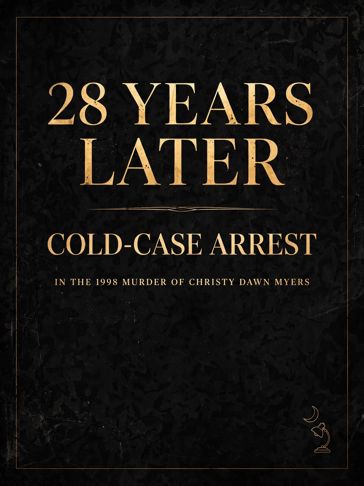
October 02, 2026
28 Years Later — Arrest in the 1998 Cold-Case Murder of Georgia Mom Christy Dawn Myers
Georgia investigators say continued forensic testing identified James Lawrence III, 47, in the September 1998 stabbing death of 20-year-old Christy Dawn Myers, whose body was found beside her car on a Coffee County highway.
READ THE STORY →October 02, 2026
Mistaken Identity: New Dad of Triplets Kidnapped from a Temple — Manhunt On for Three Suspects
Avtar Singh, 57, was taken in broad daylight from a Sikh temple in Tracy, California — but investigators say the three indicted men grabbed the wrong person. Now Alberto Alencastro, Alfonso Segura, and Barnabe Segura are at large and considered dangerous.
READ THE STORY →October 02, 2026
FBI's First Cyber Fugitive on the Ten Most Wanted List Is Back on U.S. Soil
Anibal Alexander Canelon Aguirre — a.k.a. "Prometheus" and "The Engineer" — appeared in a Nebraska courtroom Friday to face charges over a multimillion-dollar ATM jackpotting scheme allegedly funding Tren de Aragua.
READ THE STORY →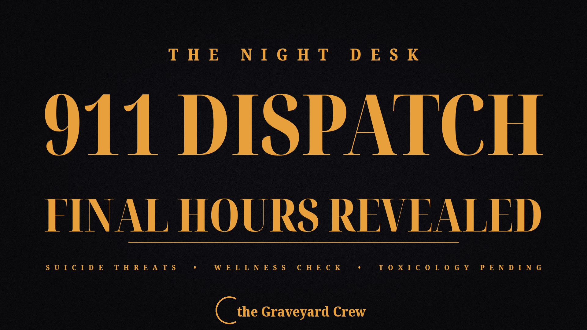
October 02, 2026
911 Dispatch Reveals Ken Urker's Final Hours
Page Six obtained the 911 dispatch call: Ken Urker's sister-in-law told dispatch he was in a "dark place," had made threats to commit suicide, and owned a gun. The official cause of death remains unreleased.
READ THE STORY →October 02, 2026
Ex-Congressman David Rivera Sentenced to 10 Years for Secretly Lobbying for Venezuela
Former U.S. Rep. David Rivera got a decade in federal prison Friday for taking $20 million from Venezuela's state oil company to quietly lobby Washington — and never registering as a foreign agent.
READ THE STORY →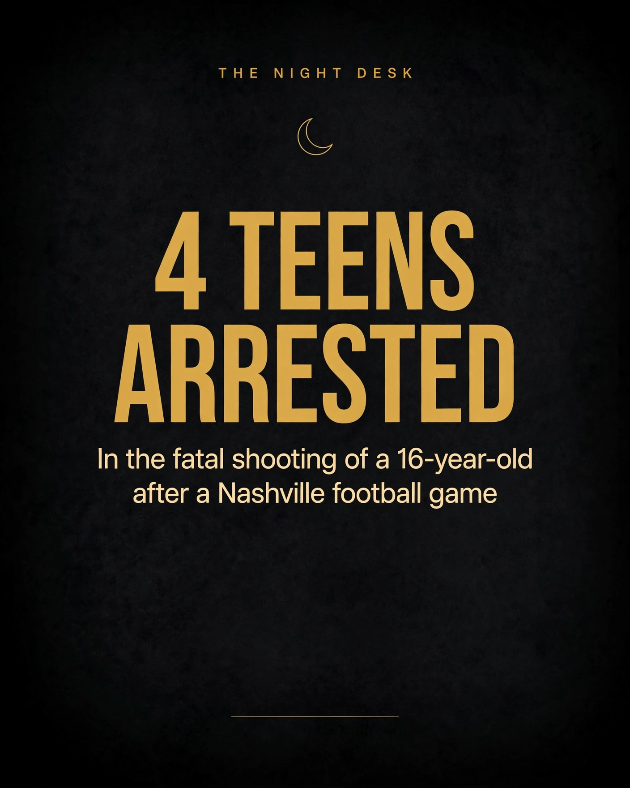
October 02, 2026
Four Teens Arrested in Fatal Shooting of 16-Year-Old After Nashville Football Game
Nashville police have arrested four teens — ages 16, 16, 17, and 18 — in the August drive-by killing of Cameron Frierson, 16, who was gunned down walking home from a high school football game.
READ THE STORY →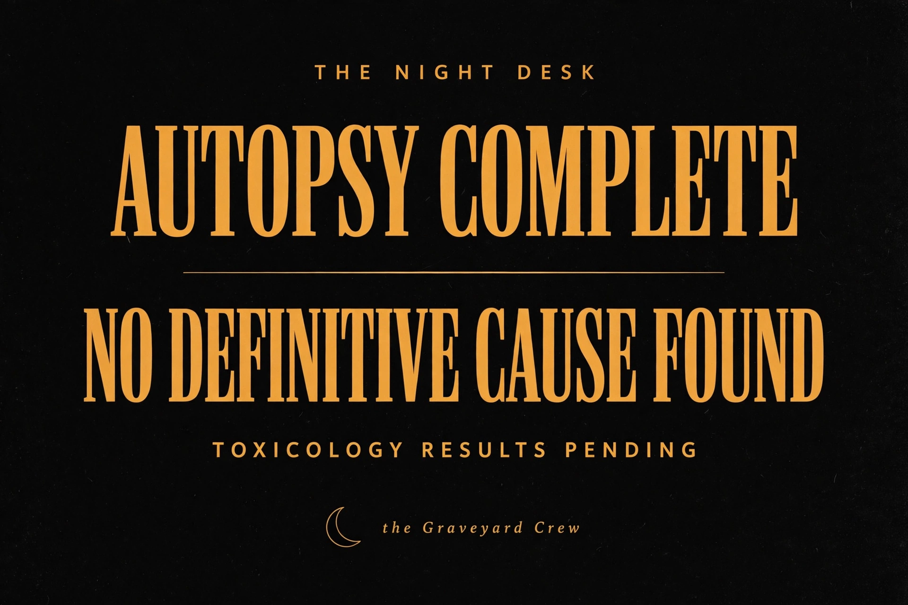
October 02, 2026
Ken Urker's Autopsy Is Complete — But the Wait for Answers Continues
The Lafourche Parish Coroner's Office says there is "no definitive cause of death" yet. Toxicology results are still pending.
READ THE STORY →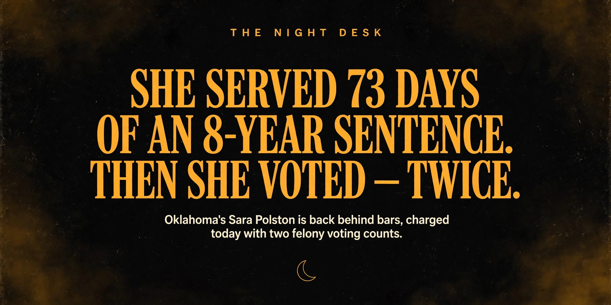
October 02, 2026
73 Days of Freedom, Then Back to Prison: Sara Polston Charged With Voting While Ineligible
Polston served 73 days of an 8-year DUI sentence before going home on a GPS ankle monitor. On October 1 she was hauled back — now facing two felony counts of voting while ineligible.
READ THE STORY →October 02, 2026
Deputy Killer Sentenced: Life Without Parole for the Murder of Ryan Clinkunbroomer
Kevin Cataneo Salazar will die in prison for the 2023 ambush killing of LA County Deputy Ryan Clinkunbroomer — a fourth-generation deputy engaged just four days before he was gunned down at a Palmdale stoplight.
READ THE STORY →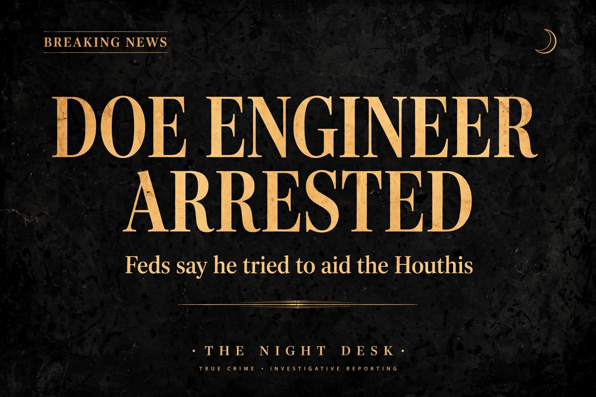
October 02, 2026
DOE Electrical Engineer Arrested on Federal Charge of Trying to Aid the Houthis
Ashton Hamed Ellaboudy, 51, allegedly bought explosive precursors and drone parts, traveled through Oman toward Yemen, and advised an FBI informant posing as a Houthi "Colonel." He faces up to 20 years.
READ THE STORY →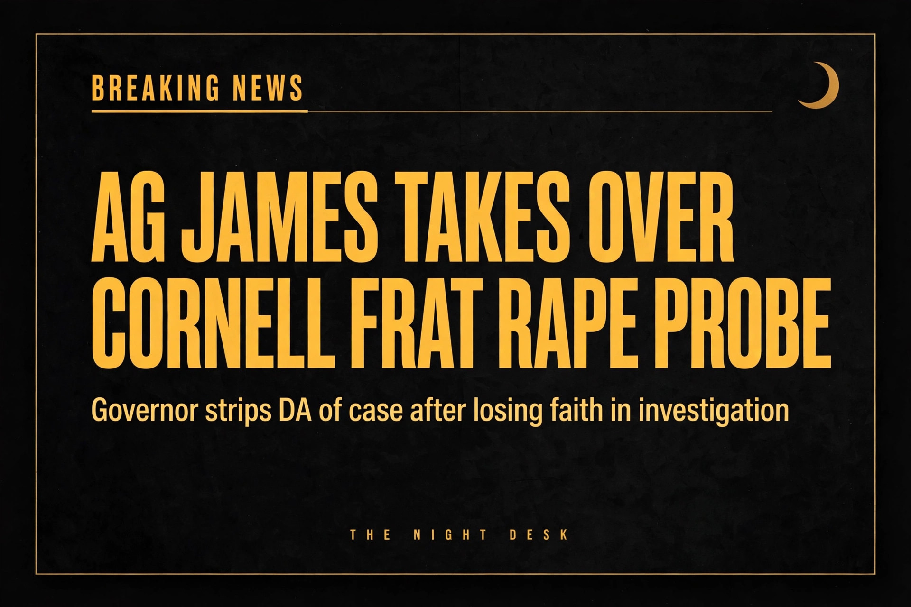
October 02, 2026
AG Letitia James Takes Over Cornell Frat Gang-Rape Probe
Governor Hochul stripped the Tompkins County DA of the case. Seven Chi Phi brothers are accused of drugging and raping a student in October 2024; Cornell expelled two.
READ THE STORY →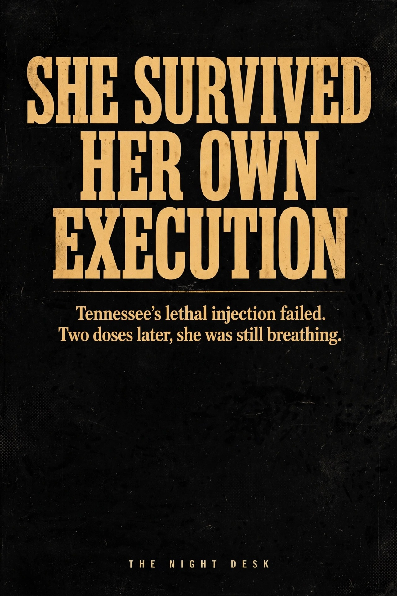
October 02, 2026
Botched Execution in Tennessee: Two Doses Failed, Governor Halts All Executions Through 2026
Christa Pike's execution went wrong when two doses of pentobarbital failed. She survived — breathing, in critical condition — and the governor paused every execution in the state.
READ THE STORY →October 01, 2026
Ken Urker, Fiancé of Gypsy Rose Blanchard, Found Dead on His Birthday in Louisiana
Urker was found unresponsive after a family member checked on him when Gypsy's "happy birthday" text went unanswered. The cause of death was not yet known; the story was developing.
READ THE STORY →October 01, 2026
Rick Ross Arrested in Miami on Domestic Battery Charges
The rapper faces a felony strangulation charge and a misdemeanor count, was released on $6,000 bond, and is due back in court October 22.
READ THE STORY →